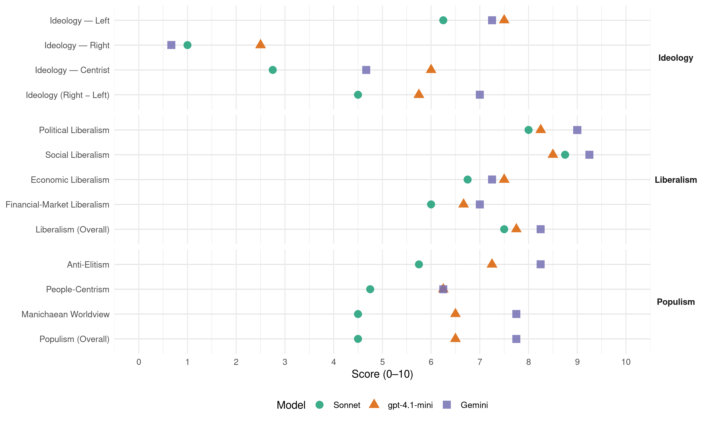

DK (Hungary, 2018)
manifesto_id 86221_201804
Get full text: This site shows derived annotations and short verbatim quotes only. The full manifesto text is © Manifesto Project / WZB — obtain it via manifesto-project.wzb.eu using the manifesto_id above.
Headline scores
| Dimension | Sonnet | gpt-4.1-mini | Gemini |
|---|---|---|---|
| Populism (Overall) | 4.5 | 6.5 | 7.8 |
| Anti-Elitism | 5.8 | 7.2 | 8.2 |
| People-Centrism | 4.8 | 6.2 | 6.2 |
| Manichaean Worldview | 4.5 | 6.5 | 7.8 |
| Ideology (Right − Left) | 4.5 | 5.8 | 7.0 |
| Liberalism (Overall) | 7.5 | 7.8 | 8.2 |
| Political Liberalism | 8.0 | 8.2 | 9.0 |
| Social Liberalism | 8.8 | 8.5 | 9.2 |
| Economic Liberalism | 6.8 | 7.5 | 7.2 |
| Financial-Market Liberalism | 6.0 | 6.7 | 7.0 |
Evidence per dimension
Economic Liberalism
Gemini · score 8.0 · verified · chunk 1
“szabályozott piac és verseny pártján állunk”
gazdaságpolitikánkban a közérdek által ésszerűen szabályozott piac és verseny pártján állunk, célunk, hogy
Gemini · score 8.0 · verified · chunk 2
“Szabad, tisztességes verseny nélkül nincs”
3.2.2. Szabad- és tisztességes versenyt Szabad, tisztességes verseny nélkül nincs hatékonyság, nincs jó minőség
Gemini · score 6.0 · verified · chunk 3
“vállalkozásokra vonatkozó szabályozás egyszerűsítését”
járulékainak differenciált csökkentését; a vállalkozásokra vonatkozó szabályozás egyszerűsítését, az egyablakos ügyintézés
Gemini · score 7.0 · verified · chunk 4
“többoldalú szabadkereskedelmi megállapodások rendszerét”
nemzeti bezárkózás politikájával szemben támogatjuk a többoldalú szabadkereskedelmi megállapodások rendszerét, de elvárjuk, hogy ezek
gpt-4.1-mini · score 8.0 · verified · chunk 1
“a közérdek által ésszerűen szabályozott piac és verseny pártján állunk”
Gazdaságpolitikánkban a közérdek által ésszerűen szabályozott piac és verseny pártján állunk, célunk, hogy a gazdaság ne csak hatékonyan, de tisztességesen is működjön, a sokak érdekét szolgálja, ne pedig a fent lévő kevesekét.
gpt-4.1-mini · score 8.0 · verified · chunk 2
“szabadkereskedelmi megállapodásokat, az ifjúsági garancia programot, a klímapolitikai célokat”
Támogatjuk az Európai Unió minden kezdeményezését, amely az európai gazdaság versenyképességének növelését, a foglalkoztatás kiterjesztését célozza, így az energiauniót, a megújuló energia elterjesztését, a progresszív gazdaságpolitikát, a digitális gazdaságot, a belső piac fejlesztését, az EU által kötött szabadkereskedelmi megállapodásokat, az ifjúsági garancia programot, a klímapolitikai célokat.
gpt-4.1-mini · score 7.0 · verified · chunk 3
“a vállalkozásokra vonatkozó szabályozás egyszerűsítését”
a bérek munkaadók által fizetett közterheinek, járulékainak differenciált csökkentését; a vállalkozásokra vonatkozó szabályozás egyszerűsítését, az egyablakos ügyintézés teljes körű kiépítését és elterjesztését; a fiatal vállalkozók kiemelt támogatását mentorálással, kedvező konstrukciójú pénzügyi támogatással, adókedvezményekkel, sokoldalú adminisztrációs segítséggel;
gpt-4.1-mini · score 7.0 · verified · chunk 4
“Ösztönözni kell az üzleti szféra és a felsőoktatás közötti együttműködést, az egyetemek és a nem egyetemi kutatóintézetek közötti együttműködést, illetve a felsőoktatási fejlesztésekbe és képzésbe való magánbefektetéseket.”
Az államnak növelnie kell a felsőoktatásra fordítandó összeget, helyre kell állítani az intézmények tartós működőképességét. Növelni kell a valós teljesítmény alapján, pályázati úton megszerezhető tudományos, kutatási támogatások arányát. Ösztönözni kell az üzleti szféra és a felsőoktatás közötti együttműködést, az egyetemek és a nem egyetemi kutatóintézetek közötti együttműködést, illetve a felsőoktatási fejlesztésekbe és képzésbe való magánbefektetéseket.
Sonnet · score 7.0 · verified · chunk 1
“közérdek által ésszerűen szabályozott piac és verseny”
Gazdaságpolitikánkban a közérdek által ésszerűen szabályozott piac és verseny pártján állunk, célunk, hogy a gazdaság ne csak hatékonyan, de tisztességesen is működjön
Sonnet · score 8.0 · verified · chunk 2
“szabad, korlátozás nélküli tőkeáramlást”
egységes európai piacot, közös monetáris- és adópolitikát, szabad, korlátozás nélküli tőkeáramlást, európai energiauniót, egységes digitális piacot, versenyképes Európai Uniót akarunk.
Sonnet · score 6.0 · verified · chunk 3
“beruházásbarát, munkahelyteremtő, az okos gazdaság”
A Demokratikus Koalíció foglalkoztatáspolitikájának négy alapelve van: a beruházásbarát, munkahelyteremtő, az okos gazdaság kiépülését támogató gazdaságpolitika
Sonnet · score 6.0 · verified · chunk 4
“verseny, a minél jobb teljesítmény elve”
A felsőoktatást szabályozza a verseny, a minél jobb teljesítmény elve! Véget kell vetni annak az értelmetlen vitának…
Financial-Market Liberalism
Gemini · score 8.0 · verified · chunk 2
“sikeres, jól működő, stabil bankszektorra”
Növelnünk kell a hitelkínálatot. Ehhez sikeres, jól működő, stabil bankszektorra van szükség. A devizahitelezési
Gemini · score 6.0 · verified · chunk 3
“önkéntes nyugdíj-előtakarékossági formákat”
Támogatjuk és adókedvezményekkel ösztönözzük az önkéntes nyugdíj-előtakarékossági formákat. A mai rendszer hatásainak
gpt-4.1-mini · score 7.0 · verified · chunk 1
“helyreállítani a központi bank funkcióit, továbbá jogi, szervezeti és személyi függetlenségét”
A Demokratikus Koalíció helyre kívánja állítani a központi bank funkcióit, továbbá jogi, szervezeti és személyi függetlenségét, működésének szakszerűségét, biztosítva tevékenységének ellenőrzését is.
gpt-4.1-mini · score 7.0 · verified · chunk 2
“stabil bankszektorra van szükség”
Növelnünk kell a hitelkínálatot. Ehhez sikeres, jól működő, stabil bankszektorra van szükség. A devizahitelezési anomáliák, a végtörlesztés és a forintosítás sokat rontottak a pénzügyi kultúra amúgy sem magas színvonalán, ezért azt mindenképpen javítani kell.
gpt-4.1-mini · score 6.0 · verified · chunk 4
“Igénybe kell venni és hatékonyan felhasználni az európai beruházási forrásokat.”
Növelni kell a főiskolák és egyetemek gazdasági önállóságát. Meg kell szüntetni az egyházi felsőoktatási intézmények és a Nemzeti Közszolgálati Egyetem kivételezett helyzetét. Igénybe kell venni és hatékonyan felhasználni az európai beruházási forrásokat.
Sonnet · score 7.0 · verified · chunk 1
“helyre kívánja állítani a központi bank funkcióit”
A Demokratikus Koalíció helyre kívánja állítani a központi bank funkcióit, továbbá jogi, szervezeti és személyi függetlenségét, működésének szakszerűségét, biztosítva tevékenységének ellenőrzését is.
Sonnet · score 7.0 · verified · chunk 2
“sikeres, jól működő, stabil bankszektorra”
Növelnünk kell a hitelkínálatot. Ehhez sikeres, jól működő, stabil bankszektorra van szükség.
Sonnet · score 5.0 · verified · chunk 3
“kedvező konstrukciójú pénzügyi támogatással”
a fiatal vállalkozók kiemelt támogatását mentorálással, kedvező konstrukciójú pénzügyi támogatással, adókedvezményekkel, sokoldalú adminisztrációs segítséggel
Sonnet · score 5.0 · verified · chunk 4
“magántőke szerepe”
Az állam nem vonulhat ki a felsőoktatás finanszírozásából, még akkor sem, ha az elmúlt 10 évben szerte a világban megnőtt a magántőke szerepe.
Political Liberalism
Gemini · score 10.0 · verified · chunk 1
“parlamentáris demokráciát, a versengő többpártrendszert”
rezsim fokozatosan felszámolta a parlamentáris demokráciát, a versengő többpártrendszert, az alkotmányos jogállamot
Gemini · score 9.0 · verified · chunk 2
“alapvető jogait. Kiemelten fontosnak”
értékeket, veszélyeztetve ezzel saját állampolgáraik alapvető jogait. Kiemelten fontosnak tatjuk, hogy létrejöjjön a hatékony
Gemini · score 8.0 · verified · chunk 3
“állam világnézeti semlegességének az oktatásban”
hit- és erkölcstanoktatást, mert az állam világnézeti semlegességének az oktatásban is érvényesülnie kell.
Gemini · score 9.0 · verified · chunk 4
“képviseleti demokrácia helyreállítása és az”
A rendszer lebontása, a képviseleti demokrácia helyreállítása és az értékelvű, Magyarország euro-atlanti beágyazottságán
gpt-4.1-mini · score 9.0 · verified · chunk 1
“helyreállítani a jogállamot és a demokratikus normákat”
A demokratikus normák és a jogállam helyreállítása az ország felemelkedésének záloga. Nem feledhetjük ugyanakkor a rendszerváltás óta eltelt időszak nagy tanulságát: nincs erős demokrácia az emberek emelkedő jóléte nélkül; ám ez fordítva is igaz: a társadalmi jólétet csak a demokratikus jogállam garantálhatja.
gpt-4.1-mini · score 8.0 · verified · chunk 2
“az Európai Unió határozottan és következetesen lépjen fel mindazokkal a tagállami kormányokkal szemben”
Támogatjuk, hogy az Uniós Alapszerződés 2. és 7. cikkelye értelmében az Európai Unió határozottan és következetesen lépjen fel mindazokkal a tagállami kormányokkal szemben, amelyek rendszerszerűen sértik meg az Európai Unió alapjait jelentő értékeket.
gpt-4.1-mini · score 7.0 · verified · chunk 3
“a társadalombiztosításhoz való alkotmányos jogot”
Elfogadhatatlannak tartjuk, hogy egy keményen ledolgozott élet után idős polgártársaink nem tisztességes nyugdíjra, hanem csak megaláztatásra számíthatnak Orbánék Magyarországán Helyreállítjuk a társadalombiztosításhoz való alkotmányos jogot. Biztosítjuk, hogy a társadalombiztosítási befizetések a nyugdíjak fedezetét és az egészségügy finanszírozását szolgálják.
gpt-4.1-mini · score 9.0 · verified · chunk 4
“Nincs demokratikus iskolarendszer a diákok, a pedagógusok és a szülők jogainak tiszteletben tartása nélkül.”
Az oktatás természetes állapota a tanítás és tanulás szabadsága. Nincs demokratikus iskolarendszer a diákok, a pedagógusok és a szülők jogainak tiszteletben tartása nélkül. A Demokratikus Koalíció oktatáspolitikája a pedagógusok felkészültségére és elhivatottságára, az óvodák, iskolák, kollégiumok szakmai autonómiájára épít.
Sonnet · score 9.0 · verified · chunk 1
“parlamentáris demokráciát, a versengő többpártrendszert”
A 2010-től uralomra került rezsim fokozatosan felszámolta a parlamentáris demokráciát, a versengő többpártrendszert, az alkotmányos jogállamot: a Harmadik Köztársaságot.
Sonnet · score 8.0 · verified · chunk 2
“Demokratikus, de hatékony és erős államot”
Demokratikus, de hatékony és erős államot akarunk, amely a lehető legszélesebbre nyitja a kapukat a vállalkozók előtt, tulajdonosként nem torzítja a piacot
Sonnet · score 7.0 · verified · chunk 3
“átlátható és demokratikus módon kell biztosítani”
Civil szervezettekkel együttműködve átlátható és demokratikus módon kell biztosítani a roma közösségek képviseletét.
Sonnet · score 8.0 · verified · chunk 4
“képviseleti demokrácia helyreállítása”
A rendszer lebontása, a képviseleti demokrácia helyreállítása és az értékelvű, Magyarország euro-atlanti beágyazottságán alapuló külpolitikához való hiteles visszatérés egymást feltételezik.
Liberalism (Overall)
Gemini · score 9.0 · verified · chunk 1
“emberi jogi és demokráciafelfogásunk liberális”
méltóságáért, nyugalmáért és jólétéért küzdünk. Emberi jogi és demokráciafelfogásunk liberális. Meggyőződésünk, hogy
Gemini · score 9.0 · verified · chunk 2
“Szabad, tisztességes verseny nélkül nincs”
3.2.2. Szabad- és tisztességes versenyt Szabad, tisztességes verseny nélkül nincs hatékonyság, nincs jó minőség
Gemini · score 7.0 · verified · chunk 3
“azonos neműek házassága és családalapítási”
diszkriminációt, kiállunk az azonos neműek házassága és családalapítási joga mellett.
Gemini · score 8.0 · verified · chunk 4
“képviseleti demokrácia helyreállítása és az”
A rendszer lebontása, a képviseleti demokrácia helyreállítása és az értékelvű, Magyarország euro-atlanti beágyazottságán
gpt-4.1-mini · score 8.0 · verified · chunk 1
“helyreállítani a jogállamot és a demokratikus normákat”
A demokratikus normák és a jogállam helyreállítása az ország felemelkedésének záloga. Nem feledhetjük ugyanakkor a rendszerváltás óta eltelt időszak nagy tanulságát: nincs erős demokrácia az emberek emelkedő jóléte nélkül; ám ez fordítva is igaz: a társadalmi jólétet csak a demokratikus jogállam garantálhatja.
gpt-4.1-mini · score 8.0 · verified · chunk 2
“Támogatjuk az Európai Unió minden kezdeményezését, amely az európai gazdaság versenyképességének növelését”
Támogatjuk az Európai Unió minden kezdeményezését, amely az európai gazdaság versenyképességének növelését, a foglalkoztatás kiterjesztését célozza, így az energiauniót, a megújuló energia elterjesztését, a progresszív gazdaságpolitikát, a digitális gazdaságot, a belső piac fejlesztését, az EU által kötött szabadkereskedelmi megállapodásokat, az ifjúsági garancia programot, a klímapolitikai célokat.
gpt-4.1-mini · score 7.0 · verified · chunk 3
“a vállalkozásokra vonatkozó szabályozás egyszerűsítését”
a bérek munkaadók által fizetett közterheinek, járulékainak differenciált csökkentését; a vállalkozásokra vonatkozó szabályozás egyszerűsítését, az egyablakos ügyintézés teljes körű kiépítését és elterjesztését; a fiatal vállalkozók kiemelt támogatását mentorálással, kedvező konstrukciójú pénzügyi támogatással, adókedvezményekkel, sokoldalú adminisztrációs segítséggel;
gpt-4.1-mini · score 8.0 · verified · chunk 4
“Nincs demokratikus iskolarendszer a diákok, a pedagógusok és a szülők jogainak tiszteletben tartása nélkül.”
Az oktatás természetes állapota a tanítás és tanulás szabadsága. Nincs demokratikus iskolarendszer a diákok, a pedagógusok és a szülők jogainak tiszteletben tartása nélkül. A Demokratikus Koalíció oktatáspolitikája a pedagógusok felkészültségére és elhivatottságára, az óvodák, iskolák, kollégiumok szakmai autonómiájára épít.
Sonnet · score 8.0 · verified · chunk 1
“Demokratikus jogállamot akarunk”
Demokratikus jogállamot akarunk. Az állam mindenki számára biztosítsa a jogegyenlőséget, sokaknak teremtsen esélyt és lehetőségeket.
Sonnet · score 8.0 · verified · chunk 2
“Szabad, tisztességes verseny nélkül nincs hatékonyság”
Szabad, tisztességes verseny nélkül nincs hatékonyság, nincs jó minőség, ezért minden mesterséges, az állam által támasztott akadályt fel kell számolni.
Sonnet · score 7.0 · verified · chunk 3
“Elutasítjuk a diszkriminációt, kiállunk az azonos neműek”
Elutasítjuk a diszkriminációt, kiállunk az azonos neműek házassága és családalapítási joga mellett.
Sonnet · score 7.0 · verified · chunk 4
“képviseleti demokrácia helyreállítása”
A rendszer lebontása, a képviseleti demokrácia helyreállítása és az értékelvű, Magyarország euro-atlanti beágyazottságán alapuló külpolitikához való hiteles visszatérés egymást feltételezik.
Anti-Elitism
Gemini · score 9.0 · verified · chunk 1
“hatalomra került szervezett rablóbandának”
az Orbán-rezsim egyszerre annak látszott, ami: hatalomra került szervezett rablóbandának. A tüntetések ereje
Gemini · score 8.0 · verified · chunk 2
“korrupt tagállami politikusok ellen”
Európai Ügyészség, amely képes fellépni az uniós források megdézsmálása, a korrupt tagállami politikusok ellen.
Gemini · score 8.0 · verified · chunk 3
“fideszes oligarchák extraprofitját”
a mesterségesen alakított árak miatt a fogyasztók fizetik meg a fideszes oligarchák extraprofitját. A fenntarthatatlan és hazug
Gemini · score 8.0 · verified · chunk 4
“szakképzés kamarai dézsmálóit és a fideszes pénzmosodákat”
A szakképzés kamarai dézsmálóit és a fideszes pénzmosodákat kipenderítjük a szakképzés és a felnőttképzés
gpt-4.1-mini · score 8.0 · verified · chunk 1
“a politikai és a vállalkozói osztály oligarchikus összefonódása”
A földuzzadt, pazarló állam mind rosszabbul látta el közfeladatait, a politikai és a vállalkozói osztály oligarchikus összefonódása pedig nemcsak a közéletet, de a gazdaságot is megnyomorította.
gpt-4.1-mini · score 7.0 · verified · chunk 2
“Meg kell szabadulnunk a ma uralmon lévő, mindenre elszánt politikai csoporttól”
3. LENDÜLETET A GAZDASÁGNAK Meg kell szabadulnunk a ma uralmon lévő, mindenre elszánt politikai csoporttól, amely az állam gazdasági szerepének növelésével, a piaci folyamatok elnyomásával elérte, hogy módszeresen fosztogathatja az ország erőforrásait, köz- és magánjavait.
gpt-4.1-mini · score 7.0 · verified · chunk 3
“a fideszes oligarchák extraprofitját”
Magyarország jelenlegi közműszolgáltatási modellje ezt nem biztosítja, sőt a mesterségesen alakított árak miatt a fogyasztók fizetik meg a fideszes oligarchák extraprofitját. A fenntarthatatlan és hazug rendszert fel kell számolni.
gpt-4.1-mini · score 7.0 · verified · chunk 4
“Elég volt a sportrendszerben meglévő korrupcióból, a bújtatott támogatásokból, az átpolitizáltságból.”
Megszüntetjük a kiemelt látványsportok TAO terhére való támogatását, a rendszer haszonélvezőit pedig elszámoltatjuk az elköltött milliárdokkal. Megakadályozzuk, hogy az egyesületekben átláthatatlan, korrupt módon összefonódhasson az állami, az önkormányzati és a magánszféra. Elég volt a sportrendszerben meglévő korrupcióból, a bújtatott támogatásokból, az átpolitizáltságból. A sporttámogatásokat átlátható és normatív rendszerben kell elosztani.
Sonnet · score 6.0 · verified · chunk 1
“egy mindenre elszánt érdekcsoport uralomra jutása”
Ez a gazdasági-politikai fertő nyelte el az egykor oly ígéretesen indult demokratikus Magyarországot – egy mindenre elszánt érdekcsoport uralomra jutása nyomán.
Sonnet · score 5.0 · verified · chunk 2
“mindenre elszánt politikai csoporttól”
Meg kell szabadulnunk a ma uralmon lévő, mindenre elszánt politikai csoporttól, amely az állam gazdasági szerepének növelésével, a piaci folyamatok elnyomásával elérte, hogy módszeresen fosztogathatja az ország erőforrásait
Sonnet · score 6.0 · verified · chunk 3
“fideszes oligarchák extraprofitját”
mesterségesen alakított árak miatt a fogyasztók fizetik meg a fideszes oligarchák extraprofitját. A fenntarthatatlan és hazug rendszert fel kell számolni.
Sonnet · score 6.0 · verified · chunk 4
“Elég volt a sportrendszerben meglévő korrupcióból”
A versenysport területén a stadionépítések és pazarló hivatali szervezetek helyett… Elég volt a sportrendszerben meglévő korrupcióból, a bújtatott támogatásokból, az átpolitizáltságból.
Ideology — Centrist
Gemini · score 5.0 · verified · chunk 1
“politikai centrumra nyitott, az európai”
Demokratikus Koalíció balközép párt. A politikai centrumra nyitott, az európai polgári világ mellett
Gemini · score 4.0 · verified · chunk 2
“becsületes és büszke adófizetők”
Az adócsalók országa helyett a becsületes és büszke adófizetők országát akarjuk megteremteni.
Gemini · score 5.0 · verified · chunk 4
“szakképzés és a felnőttképzés rendszeréből”
fideszes pénzmosodákat kipenderítjük a szakképzés és a felnőttképzés rendszeréből, vezetőiket pedig elszámoltatjuk
gpt-4.1-mini · score 6.0 · verified · chunk 1
“a politikai centrumra nyitott, az európai polgári világ mellett elkötelezett demokrata szavazók pártja”
A Demokratikus Koalíció balközép párt. A politikai centrumra nyitott, az európai polgári világ mellett elkötelezett demokrata szavazók pártja.
gpt-4.1-mini · score 7.0 · verified · chunk 2
“a társadalom peremére szorultak befogadását, a társadalmi különbségek csökkentését”
A társadalom peremére szorultak befogadását, a társadalmi különbségek csökkentését alapvető morális, politikai és emberi jogi kérdésének tekintjük.
gpt-4.1-mini · score 5.0 · verified · chunk 3
“a társadalom perifériájára szorult gyerekek számára”
Társadalompolitikánk meghatározó pillére a hatékony, tényleges esélyteremtés a társadalom perifériájára szorult gyerekek számára. Ennek meghatározó terepe és egyben eszköze az oktatás, amely azonban csak akkor tud valódi esélyeket teremteni,
gpt-4.1-mini · score 6.0 · verified · chunk 4
“Nemzeti demagógia helyett európai patriotizmussal kívánjuk elősegíteni a bilaterális és multilaterális párbeszédet.”
Az átfogó rendszerkorrekciónak tehát szükségszerű külpolitikai megújulással kell együttjárnia. Olyan külpolitikai stratégiára van szükség, mely céljául az ország nemzetközi hitelének helyreállítását, szövetségesi és partnerségi viszonyainak tisztázását tűzi ki. Nemzeti demagógia helyett európai patriotizmussal kívánjuk elősegíteni a bilaterális és multilaterális párbeszédet.
Sonnet · score 3.0 · verified · chunk 1
“A politikai centrumra nyitott”
A Demokratikus Koalíció balközép párt. A politikai centrumra nyitott, az európai polgári világ mellett elkötelezett demokrata szavazók pártja.
Sonnet · score 3.0 · verified · chunk 2
“széleskörű társadalmi konszenzuson alapuló”
Hosszú távú, politikai ciklusokon átívelő, széleskörű társadalmi konszenzuson alapuló országstratégia kell, amely az erősségekre építve ambiciózus célokat tűz ki.
Sonnet · score 2.0 · verified · chunk 3
“Demokratikus Koalíció foglalkoztatáspolitikájának négy alapelve”
A Demokratikus Koalíció foglalkoztatáspolitikájának négy alapelve van: a beruházásbarát, munkahelyteremtő, az okos gazdaság kiépülését támogató gazdaságpolitika
Sonnet · score 3.0 · verified · chunk 4
“Nemzeti demagógia helyett európai patriotizmussal”
Nemzeti demagógia helyett európai patriotizmussal kívánjuk elősegíteni a bilaterális és multilaterális párbeszédet.
Ideology — Left
Gemini · score 8.0 · verified · chunk 1
“társadalompolitikai elképzeléseink baloldaliak: egyenlősítők”
alapozni az ország jövőjét. Társadalompolitikai elképzeléseink baloldaliak: egyenlősítők, szolidárisak, Befogadók.
Gemini · score 7.0 · verified · chunk 2
“Szociális Európát akarunk”
álló lehetőségek közül az együttműködést szorosabbra fűző forgatókönyvet támogatjuk. Szociális Európát akarunk, amelyben hatékony közös szabályok
Gemini · score 8.0 · verified · chunk 3
“nagyvállalatok és a különösen nagy jövelemű”
adózás kiskapuit, és az adóhatóságon belül létrehozzuk a nagyvállalatok és a különösen nagy jövelemű magánszemélyek adózását
Gemini · score 6.0 · verified · chunk 4
“társadalmi hátrányokat csökkentő oktatást akarunk”
Minden diák számára esélyt teremtő, a társadalmi hátrányokat csökkentő oktatást akarunk. Az oktatás fejlesztése, modernizálása
gpt-4.1-mini · score 7.0 · verified · chunk 1
“Társadalompolitikai elképzeléseink baloldaliak: egyenlősítők, szolidárisak, Befogadók”
Társadalompolitikai elképzeléseink baloldaliak: egyenlősítők, szolidárisak, Befogadók. Valljuk, hogy önmagunkon kívül másokért is felelősek vagyunk.
gpt-4.1-mini · score 8.0 · verified · chunk 2
“méltányos közteherviselést”
4.1.2. Igazságos közteherviselést A 2010-et követően az adórendszer átalakítása a szolidaritás és a közteherviselés elveivel ellentétben ment végbe.
gpt-4.1-mini · score 8.0 · verified · chunk 3
“a mélyszegénység mérséklését”
Tudjuk, hogy a jelenlegi helyzetet nem lehet gyorsan és radikálisan megváltoztatni, de arra kell törekedni, hogy fokozatosan csökkenjenek a kiáltó társadalmi különbségek. A feltételekhez kötött családi minimáljövedelem rendszerében olyan szociális támogatást nyújtunk, amely a megélhetés minimumának biztosítása mellett ösztönöz a szegénységből való kitörésre is.
gpt-4.1-mini · score 7.0 · verified · chunk 4
“Elkötelezettek vagyunk a szektorsemleges finanszírozás, az egyházi intézmények finanszírozási kiváltságainak és a civil szféra intézményi hátrányainak a megszüntetése mellett.”
A Demokratikus Koaüció a közoktatást elsőrendűen állami feladatként kezeli, a költségvetési támogatást az állami oktatási rendszer fenntartására kívánja fordítani. Nem adunk kiemelt támogatást az egyházi és magániskoláknak, kivéve azokat, amelyek sérült, fogyatékos és hátrányos helyzetű gyermekek oktatásával, képzésével foglalkoznak. Elkötelezettek vagyunk a szektorsemleges finanszírozás, az egyházi intézmények finanszírozási kiváltságainak és a civil szféra intézményi hátrányainak a megszüntetése mellett.
Sonnet · score 6.0 · verified · chunk 1
“társadalmi különbségek csökkentését alapvető morális”
A társadalom peremére szorultak befogadását, a társadalmi különbségek csökkentését alapvető morális, politikai és emberi jogi kérdésnek tekintjük.
Sonnet · score 6.0 · verified · chunk 2
“bérek állandó, kiszámítható emelésére van szükség”
hosszú távon a korszerű gazdasági szektorokban való versenyképességet is rontja a bérek alacsony színvonala, ezért a bérek állandó, kiszámítható emelésére van szükség
Sonnet · score 7.0 · verified · chunk 3
“kiáltó társadalmi különbségek”
arra kell törekedni, hogy fokozatosan csökkenjenek a kiáltó társadalmi különbségek. A feltételekhez kötött családi minimáljövedelem rendszerében
Sonnet · score 6.0 · verified · chunk 4
“társadalmi egyenlőtlenségeket”
A mai oktatáspolitika nem segíti a társadalmi mobilitást, nem teremt esélyegyenlőséget, hanem konzerválja a társadalmi egyenlőtlenségeket.
Ideology (Right − Left)
Gemini · score 8.0 · verified · chunk 1
“balközép párt. A politikai centrumra”
A Demokratikus Koalíció balközép párt. A politikai centrumra nyitott, az európai polgári
Gemini · score 6.0 · verified · chunk 2
“Szociális Európát akarunk”
álló lehetőségek közül az együttműködést szorosabbra fűző forgatókönyvet támogatjuk. Szociális Európát akarunk, amelyben hatékony közös szabályok
Gemini · score 8.0 · verified · chunk 3
“nagyvállalatok és a különösen nagy jövelemű”
adózás kiskapuit, és az adóhatóságon belül létrehozzuk a nagyvállalatok és a különösen nagy jövelemű magánszemélyek adózását
Gemini · score 6.0 · verified · chunk 4
“társadalmi hátrányokat csökkentő oktatást akarunk”
Minden diák számára esélyt teremtő, a társadalmi hátrányokat csökkentő oktatást akarunk. Az oktatás fejlesztése, modernizálása
gpt-4.1-mini · score 6.0 · verified · chunk 1
“a politikai centrumra nyitott, az európai polgári világ mellett elkötelezett demokrata szavazók pártja”
A Demokratikus Koalíció balközép párt. A politikai centrumra nyitott, az európai polgári világ mellett elkötelezett demokrata szavazók pártja.
gpt-4.1-mini · score 6.0 · verified · chunk 2
“méltányos közteherviselést”
4.1.2. Igazságos közteherviselést A 2010-et követően az adórendszer átalakítása a szolidaritás és a közteherviselés elveivel ellentétben ment végbe.
gpt-4.1-mini · score 6.0 · verified · chunk 3
“a mélyszegénység mérséklését”
Tudjuk, hogy a jelenlegi helyzetet nem lehet gyorsan és radikálisan megváltoztatni, de arra kell törekedni, hogy fokozatosan csökkenjenek a kiáltó társadalmi különbségek. A feltételekhez kötött családi minimáljövedelem rendszerében olyan szociális támogatást nyújtunk, amely a megélhetés minimumának biztosítása mellett ösztönöz a szegénységből való kitörésre is.
gpt-4.1-mini · score 5.0 · verified · chunk 4
“Elkötelezettek vagyunk a szektorsemleges finanszírozás, az egyházi intézmények finanszírozási kiváltságainak és a civil szféra intézményi hátrányainak a megszüntetése mellett.”
A Demokratikus Koaüció a közoktatást elsőrendűen állami feladatként kezeli, a költségvetési támogatást az állami oktatási rendszer fenntartására kívánja fordítani. Nem adunk kiemelt támogatást az egyházi és magániskoláknak, kivéve azokat, amelyek sérült, fogyatékos és hátrányos helyzetű gyermekek oktatásával, képzésével foglalkoznak. Elkötelezettek vagyunk a szektorsemleges finanszírozás, az egyházi intézmények finanszírozási kiváltságainak és a civil szféra intézményi hátrányainak a megszüntetése mellett.
Sonnet · score 4.0 · verified · chunk 1
“Baloldaliak vagyunk, de nem elsősorban a hagyományos szocialista”
Baloldaliak vagyunk, de nem elsősorban a hagyományos szocialista-szociáldemokrata, munkásmozgalmi, hanem inkább az útkereső progresszív baloldali hagyomány folytatói.
Sonnet · score 4.0 · verified · chunk 2
“befogadó, szolidáris és teljesítményelvű társadalom”
A Demokratikus Koalíció társadalompolitikájának elsődleges célja egy befogadó, szolidáris és teljesítményelvű társadalom létrehozása.
Sonnet · score 6.0 · verified · chunk 3
“nagyvállalatok és a különösen nagy jövelemű magánszemélyek”
az adóhatóságon belül létrehozzuk a nagyvállalatok és a különösen nagy jövelemű magánszemélyek adózását kiemelten megfigyelő akciócsoportot
Sonnet · score 4.0 · verified · chunk 4
“társadalmi egyenlőtlenségeket”
A mai oktatáspolitika nem segíti a társadalmi mobilitást, nem teremt esélyegyenlőséget, hanem konzerválja a társadalmi egyenlőtlenségeket.
Ideology — Right
Gemini · score 0.0 · verified · chunk 1
“elutasítjuk a populista és demagóg Európa-ellenességet”
hatékony válaszok. Határozottan elutasítjuk a populista és demagóg Európa-ellenességet, a nacionalizmust, politikai
Gemini · score 1.0 · verified · chunk 2
“elítéljük a terrorizmust, a vallási”
menekültügy közös európai kezelését. A leghatározottabban elítéljük a terrorizmust, a vallási köntösbe bújtatott gyűlöletbeszédet
Gemini · score 1.0 · verified · chunk 4
“elveti az etnonacionalista magyarság-értelmezést”
A DK elveti az etnonacionalista magyarság-értelmezést. Magyarságunk alapja európaiságunk.
gpt-4.1-mini · score 3.0 · verified · chunk 1
“Nemzeti bezárkózást hirdet, összejátszik a szélsőjobboldallal”
Külső és belső ellenségeket keres, bűnbakokat képez, indulatokat gerjeszt. Nemzeti bezárkózást hirdet, összejátszik a szélsőjobboldallal.
gpt-4.1-mini · score 2.0 · verified · chunk 2
“a menekültügy közös európai kezelését”
Támogatjuk a közös európai határvédelmet, a Frontex jogosítványainak kiterjesztését, a menekültügy közös európai kezelését.
gpt-4.1-mini · score 2.0 · verified · chunk 3
“Nem fogadjuk el az alaptörvény azon cikkelyét, mely a házasság intézményét kizárólag férfi és nő közötti életközösségként definiálja”
Nem fogadjuk el az alaptörvény azon cikkelyét, mely a házasság intézményét kizárólag férfi és nő közötti életközösségként definiálja, a családot pedig házassághoz köti Elutasítjuk a diszkriminációt, kiállunk az azonos neműek házassága és családalapítási joga mellett.
gpt-4.1-mini · score 3.0 · verified · chunk 4
“Felszámoljuk az orosz támogatással működő szélsőjobboldali csoportokat, kivizsgáljuk a Fidesz és a Jobbik orosz kapcsolatait, elutasítjuk a Magyarországot gazdasági függőségbe hozó Paks II. megállapodást.”
Támogatjuk és erősíteni kívánjuk azt a közös eruópai politikát, amelynek célja az orosz terjeszkedés visszaszorítása, a politikai, titkosszolgálai és gazdasági eszközökkel is operáló befolyásszerzés megakadályozása. Felszámoljuk az orosz támogatással működő szélsőjobboldali csoportokat, kivizsgáljuk a Fidesz és a Jobbik orosz kapcsolatait, elutasítjuk a Magyarországot gazdasági függőségbe hozó Paks II. megállapodást.
Sonnet · score 1.0 · verified · chunk 1
“Elutasítjuk a mindenkivel harcoló, kerítésépítő, bezárkózó”
Elutasítjuk a mindenkivel harcoló, kerítésépítő, bezárkózó, kirekesztő, nacionalista orbáni világot.
Sonnet · score 1.0 · verified · chunk 2
“iszlám radikalizmust”
A leghatározottabban elítéljük a terrorizmust, a vallási köntösbe bújtatott gyűlöletbeszédet, az iszlám radikalizmust, és támogatunk minden olyan intézkedést, amely hozzájárul a bevándorlók hatékony integrációjához
Sonnet · score 1.0 · verified · chunk 3
“bevándorlók kulturális identitását”
ideértve a történelmi nemzetiségek, kisebbségek, romák, bevándorlók kulturális identitását. Támogassuk kiemelten a tanodákat
Sonnet · score 1.0 · verified · chunk 4
“határon túli magyarokat”
Segítjük a határon túli magyarokat a nyelvi, a kulturális és a közös történelmi identitás megőrzésében.
Manichaean Worldview
Gemini · score 9.0 · verified · chunk 1
“közjavak szervezett fosztogatása adja”
önkényuralmi működésen túl a közjavak szervezett fosztogatása adja az Orbán-rezsim másik alapvonását
Gemini · score 7.0 · verified · chunk 2
“mindenre elszánt politikai csoporttól”
Meg kell szabadulnunk a ma uralmon lévő, mindenre elszánt politikai csoporttól, amely az állam gazdasági szerepének
Gemini · score 8.0 · verified · chunk 3
“Orbán-rezsim általi méltánytalan átalakítását”
Felül kell vizsgálni a rokkantnyugdíjaknak az Orbán-rezsim általi méltánytalan átalakítását és a felülvizsgálatok megalázó
Gemini · score 7.0 · verified · chunk 4
“rendszer haszonélvezőit pedig elszámoltatjuk az”
látványsportok TAO terhére való támogatását, a rendszer haszonélvezőit pedig elszámoltatjuk az elköltött milliárdokkal.
gpt-4.1-mini · score 8.0 · verified · chunk 1
“Külső és belső ellenségeket keres, bűnbakokat képez, indulatokat gerjeszt”
A rendszer a társadalomban élő félelmekre, előítéletekre, rossz ösztönökre épít. Külső és belső ellenségeket keres, bűnbakokat képez, indulatokat gerjeszt.
gpt-4.1-mini · score 5.0 · mixed · chunk 2
“a korrupciót, a közpénzekkel való visszaélést”
keményen megtorolja a korrupciót, a közpénzekkel való visszaélést. Magyarország be akar kapcsolódni a negyedik ipari forradalomba.
gpt-4.1-mini · score 5.0 · mixed · chunk 3
“Orbánék Magyarországán Helyreállítjuk a társadalombiztosításhoz való alkotmányos jogot”
Elfogadhatatlannak tartjuk, hogy egy keményen ledolgozott élet után idős polgártársaink nem tisztességes nyugdíjra, hanem csak megaláztatásra számíthatnak Orbánék Magyarországán Helyreállítjuk a társadalombiztosításhoz való alkotmányos jogot. Biztosítjuk, hogy a társadalombiztosítási befizetések a nyugdíjak fedezetét és az egészségügy finanszírozását szolgálják.
gpt-4.1-mini · score 5.0 · verified · chunk 4
“Elég volt a sportrendszerben meglévő korrupcióból, a bújtatott támogatásokból, az átpolitizáltságból.”
Megszüntetjük a kiemelt látványsportok TAO terhére való támogatását, a rendszer haszonélvezőit pedig elszámoltatjuk az elköltött milliárdokkal. Megakadályozzuk, hogy az egyesületekben átláthatatlan, korrupt módon összefonódhasson az állami, az önkormányzati és a magánszféra. Elég volt a sportrendszerben meglévő korrupcióból, a bújtatott támogatásokból, az átpolitizáltságból. A sporttámogatásokat átlátható és normatív rendszerben kell elosztani.
Sonnet · score 5.0 · verified · chunk 1
“maffiaállammal, a bennfentesek politikai-gazdasági összefonódásával nincs kiegyezés”
A maffiaállammal, a bennfentesek politikai-gazdasági összefonódásával nincs kiegyezés.
Sonnet · score 4.0 · verified · chunk 2
“módszeresen fosztogathatja az ország erőforrásait”
mindenre elszánt politikai csoporttól, amely az állam gazdasági szerepének növelésével, a piaci folyamatok elnyomásával elérte, hogy módszeresen fosztogathatja az ország erőforrásait, köz- és magánjavait
Sonnet · score 5.0 · verified · chunk 3
“fenntarthatatlan és hazug rendszert fel kell számolni”
mesterségesen alakított árak miatt a fogyasztók fizetik meg a fideszes oligarchák extraprofitját. A fenntarthatatlan és hazug rendszert fel kell számolni.
Sonnet · score 4.0 · verified · chunk 4
“hazug és antidemokratikus emlékezetpolitikájával”
Radikálisan szakítani kell az Orbán-kormány hazug és antidemokratikus emlékezetpolitikájával és annak szimbólumaival.
People-Centrism
Gemini · score 8.0 · verified · chunk 1
“sokak, a társadalom széles köreinek”
alapon, a sokak, a társadalom széles köreinek a méltóságáért, nyugalmáért és jólétéért
Gemini · score 5.0 · verified · chunk 2
“minden uniós polgár egyenlő jogainak”
minden uniós tagállam érdeke a munkaerő szabad áramlásának biztosítása, minden uniós polgár egyenlő jogainak tisztelete
Gemini · score 7.0 · verified · chunk 3
“idős polgártársaink nem tisztességes nyugdíjra”
ledolgozott élet után idős polgártársaink nem tisztességes nyugdíjra, hanem csak megaláztatásra számíthatnak
Gemini · score 5.0 · verified · chunk 4
“műveltség minden polgártársunk számára elérhető”
közkultúra hálózatát, hogy a műveltség minden polgártársunk számára elérhető legyen. Támogatjuk és ösztönözzük
gpt-4.1-mini · score 7.0 · verified · chunk 1
“a sokak, a társadalom széles köreinek a méltóságáért, nyugalmáért és jólétéért küzdünk”
Nem egy szűk csoport érdekében, hanem a közös értékeket megjelenítve morális alapon, a sokak, a társadalom széles köreinek a méltóságáért, nyugalmáért és jólétéért küzdünk.
gpt-4.1-mini · score 6.0 · verified · chunk 2
“a társadalom peremére szorultak befogadását, a társadalmi különbségek csökkentését”
A társadalom peremére szorultak befogadását, a társadalmi különbségek csökkentését alapvető morális, politikai és emberi jogi kérdésének tekintjük.
gpt-4.1-mini · score 6.0 · verified · chunk 3
“a társadalom perifériájára szorult gyerekek számára”
Társadalompolitikánk meghatározó pillére a hatékony, tényleges esélyteremtés a társadalom perifériájára szorult gyerekek számára. Ennek meghatározó terepe és egyben eszköze az oktatás, amely azonban csak akkor tud valódi esélyeket teremteni,
gpt-4.1-mini · score 6.0 · verified · chunk 4
“A sport közösségépítő erő lehet a települések mindennapi életében.”
A sport közösségépítő erő lehet a települések mindennapi életében. A társadalmi önkéntesség ösztönzésével, a hátrányos helyzetű településeken létrejövő kezdeményezések támogatásával komoly eredmények érhetők el az életminőség javításában.
Sonnet · score 6.0 · verified · chunk 1
“sokak boldogulhatnak – szándékunk szerint mindannyian”
Milyen elvek és értékek szerint kívánjuk fölépíteni a jövő Magyarországát, ahol nemcsak kevesek, de sokak boldogulhatnak – szándékunk szerint mindannyian.
Sonnet · score 4.0 · verified · chunk 2
“az ország minden polgárának”
Esélyt kell nyújtanunk az ország minden polgárának függetlenül attól, hogy jómódú vagy szegényebb családba, az ország fejlett vagy kevésbé fejlett régiójába született.
Sonnet · score 5.0 · verified · chunk 3
“minden rászoruló, hogy van kire számítania”
Tudja minden rászoruló, hogy van kire számítania, aki segítséget tud nyújtani neki.
Sonnet · score 4.0 · verified · chunk 4
“minden diák számára esélyt teremtő”
Minden diák számára esélyt teremtő, a társadalmi hátrányokat csökkentő oktatást akarunk.
Populism (Overall)
Gemini · score 9.0 · verified · chunk 1
“felszámolni az orbáni maffiaállamot”
rendszerváltás kell: felszámolni az orbáni maffiaállamot és európai értékeken nyugvó
Gemini · score 7.0 · verified · chunk 2
“mindenre elszánt politikai csoporttól”
Meg kell szabadulnunk a ma uralmon lévő, mindenre elszánt politikai csoporttól, amely az állam gazdasági szerepének
Gemini · score 8.0 · verified · chunk 3
“fideszes oligarchák extraprofitját”
a mesterségesen alakított árak miatt a fogyasztók fizetik meg a fideszes oligarchák extraprofitját. A fenntarthatatlan és hazug
Gemini · score 7.0 · verified · chunk 4
“szakképzés kamarai dézsmálóit és a fideszes pénzmosodákat”
A szakképzés kamarai dézsmálóit és a fideszes pénzmosodákat kipenderítjük a szakképzés és a felnőttképzés
gpt-4.1-mini · score 8.0 · verified · chunk 1
“a politikai és a vállalkozói osztály oligarchikus összefonódása”
A földuzzadt, pazarló állam mind rosszabbul látta el közfeladatait, a politikai és a vállalkozói osztály oligarchikus összefonódása pedig nemcsak a közéletet, de a gazdaságot is megnyomorította.
gpt-4.1-mini · score 6.0 · verified · chunk 2
“Meg kell szabadulnunk a ma uralmon lévő, mindenre elszánt politikai csoporttól”
3. LENDÜLETET A GAZDASÁGNAK Meg kell szabadulnunk a ma uralmon lévő, mindenre elszánt politikai csoporttól, amely az állam gazdasági szerepének növelésével, a piaci folyamatok elnyomásával elérte, hogy módszeresen fosztogathatja az ország erőforrásait, köz- és magánjavait.
gpt-4.1-mini · score 6.0 · verified · chunk 3
“a fideszes oligarchák extraprofitját”
Magyarország jelenlegi közműszolgáltatási modellje ezt nem biztosítja, sőt a mesterségesen alakított árak miatt a fogyasztók fizetik meg a fideszes oligarchák extraprofitját. A fenntarthatatlan és hazug rendszert fel kell számolni.
gpt-4.1-mini · score 6.0 · verified · chunk 4
“Elég volt a sportrendszerben meglévő korrupcióból, a bújtatott támogatásokból, az átpolitizáltságból.”
Megszüntetjük a kiemelt látványsportok TAO terhére való támogatását, a rendszer haszonélvezőit pedig elszámoltatjuk az elköltött milliárdokkal. Megakadályozzuk, hogy az egyesületekben átláthatatlan, korrupt módon összefonódhasson az állami, az önkormányzati és a magánszféra. Elég volt a sportrendszerben meglévő korrupcióból, a bújtatott támogatásokból, az átpolitizáltságból. A sporttámogatásokat átlátható és normatív rendszerben kell elosztani.
Sonnet · score 5.0 · verified · chunk 1
“orbáni maffiaállam legfőbb kitervelőinek, működtetőinek”
Az orbáni maffiaállam legfőbb kitervelőinek, működtetőinek és közvetlen haszonélvezőinek a független bíróság előtt kell felelniük.
Sonnet · score 4.0 · verified · chunk 2
“fideszes földmaffiának”
Megálljt parancsolunk a fideszes földmaffiának. A jogszabályok kicsavarásával megszerzett földeket visszaveszzük a fideszes új földesuraktól és strómanoktól.
Sonnet · score 5.0 · verified · chunk 3
“fideszes oligarchák extraprofitját”
mesterségesen alakított árak miatt a fogyasztók fizetik meg a fideszes oligarchák extraprofitját. A fenntarthatatlan és hazug rendszert fel kell számolni.
Sonnet · score 4.0 · verified · chunk 4
“Elég volt a sportrendszerben meglévő korrupcióból”
A versenysport területén a stadionépítések és pazarló hivatali szervezetek helyett… Elég volt a sportrendszerben meglévő korrupcióból, a bújtatott támogatásokból, az átpolitizáltságból.
Social Liberalism